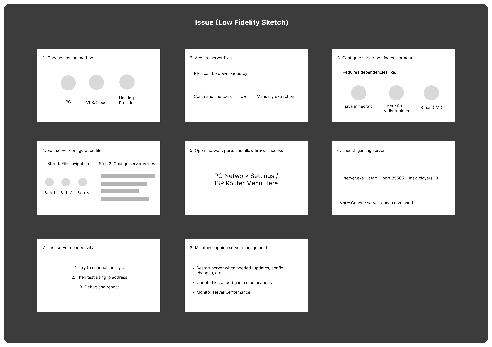

TennaJam — Simplifying Dedicated Server Workflows
A systems-level design exploration focused on restructuring a dense, technical workflow into a guided, predictable experience for everyday users.

Dedicated server hosting platforms are often difficult for non-technical users to navigate, with workflows that expose dense configuration options, unclear terminology, and fragmented control surfaces. Users are required to make multiple technical decisions upfront, increasing friction during both setup and ongoing management.
Design a workflow that enables non-technical users to create and manage dedicated servers without requiring prior infrastructure knowledge.
Focus
- Reduce decision complexity
- Improve task completion confidence
- Maintain full system capability
Restructured the server creation and management experience using a guided, step-based workflow.
Key design decisions:
- Introduced guided server setup with preconfigured defaults
- Separated high-level overview from advanced configuration controls
- Implemented persistent system state indicators for clarity
- Consolidated actions into a single control surface
This approach reduces initial complexity while preserving access to advanced functionality.

The redesigned workflow:
- Reduces cognitive load during multi-step processes
- Prevents decision overload during setup
- Improves clarity of system status and next actions
- Creates a more predictable and learnable interaction model
The system supports both new and experienced users without sacrificing capability.
- End-to-end workflow design for complex systems
- Information architecture for multi-layered interfaces
- Progressive disclosure in high-complexity environments
- State modeling and system feedback design
- Designing for both novice and advanced users
This project demonstrates the ability to design usable interfaces for technically complex products such as:
- SaaS Platforms
- Admin Dashboards
- Infrastructure and developer tools
"Simplify the workflow, not the power."